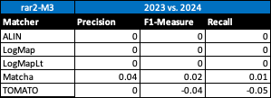

Web page content
We have three variants of crisp reference alignments (the confidence values for all matches are 1.0). They contain 21 alignments (test cases), which corresponds to the complete alignment space between 7 ontologies from the OntoFarm data set. This is a subset of all ontologies within this track (16) [4], see OntoFarm data set web page.
We provide three evaluation variants for each reference alignment
rar2 M3 is used as the main reference alignment for this year. It will also be used within the synthesis paper.
| ra1 | ra2 | rar2 | |
| M1 | ra1-M1 | ra2-M1 | rar2-M1 |
| M2 | ra1-M2 | ra2-M2 | rar2-M2 |
| M3 | ra1-M3 | ra2-M3 | rar2-M3 |
Regarding evaluation based on reference alignment, we first filtered out (from the generated alignments) all instance-to-any_entity and owl:Thing-to-any_entity correspondences prior to computing Precision/Recall/F1-measure/F2-measure/F0.5-measure because they are not contained in the reference alignment. In order to compute average Precision and Recall over all those alignments, we used absolute scores (i.e. we computed precision and recall using absolute scores of TP, FP, and FN across all 21 test cases). This corresponds to micro average precision and recall. Therefore, the resulting numbers can slightly differ with those computed by the SEALS platform (macro average precision and recall). Then, we computed F1-measure in a standard way. Finally, we found the highest average F1-measure with thresholding (if possible).
In order to provide some context for understanding matchers performance, we included two simple string-based matchers as baselines. StringEquiv (it was called Baseline1 before) is a string matcher based on string equality applied on local names of entities which were lowercased before (this baseline was also used within anatomy track 2012) and edna (string editing distance matcher) was adopted from benchmark track (wrt. performance it is very similar to the previously used baseline2).
In the tables below, there are results of all 7 tools with regard to all combinations of evaluation variants with crisp reference alignments. There are precision, recall, F1-measure, F2-measure and F0.5-measure computed for the threshold that provides the highest average F1-measure computed for each matcher. F1-measure is the harmonic mean of precision and recall. F2-measure (for beta=2) weights recall higher than precision and F0.5-measure (for beta=0.5) weights precision higher than recall.
Table below summarizes performance results of eight tools that participated in the last 2 years of OAEI Conference track with regard to reference alignment rar2.

Based on this evaluation, we can see that three of the matching tools (ALIN, LogMap, LogMapLt) did not change the results. TOMATO slightly decreased its F1-measure and recall. Matcha slightly increased all three, precision, F1-measure, and recall.
All tools are visualized in terms of their performance regarding an average F1-measure in the figure below. Tools are represented as squares or triangles. Baselines are represented as circles. Horizontal line depicts level of precision/recall while values of average F1-measure are depicted by areas bordered by corresponding lines F1-measure=0.[5|6|7].

Based on the evaluation variants M1 and M2, four matchers (ALIN, AMD, LSMatch, and SORBETMtch) do not match properties at all. On the other side, PropMatch does not match classes at all, while it dominates in matching properties. Naturally, this has a negative effect on the overall tools performance within the M3 evaluation variant.
[1] Michelle Cheatham, Pascal Hitzler: Conference v2.0: An Uncertain Version of the OAEI Conference Benchmark. International Semantic Web Conference (2) 2014: 33-48.
[2] Alessandro Solimando, Ernesto Jiménez-Ruiz, Giovanna Guerrini: Detecting and Correcting Conservativity Principle Violations in Ontology-to-Ontology Mappings. International Semantic Web Conference (2) 2014: 1-16.
[3] Alessandro Solimando, Ernesto Jiménez-Ruiz, Giovanna Guerrini: A Multi-strategy Approach for Detecting and Correcting Conservativity Principle Violations in Ontology Alignments. OWL: Experiences and Directions Workshop 2014 (OWLED 2014). 13-24.
[4] Ondřej Zamazal, Vojtěch Svátek. The Ten-Year OntoFarm and its Fertilization within the Onto-Sphere. Web Semantics: Science, Services and Agents on the World Wide Web, 43, 46-53. 2018.